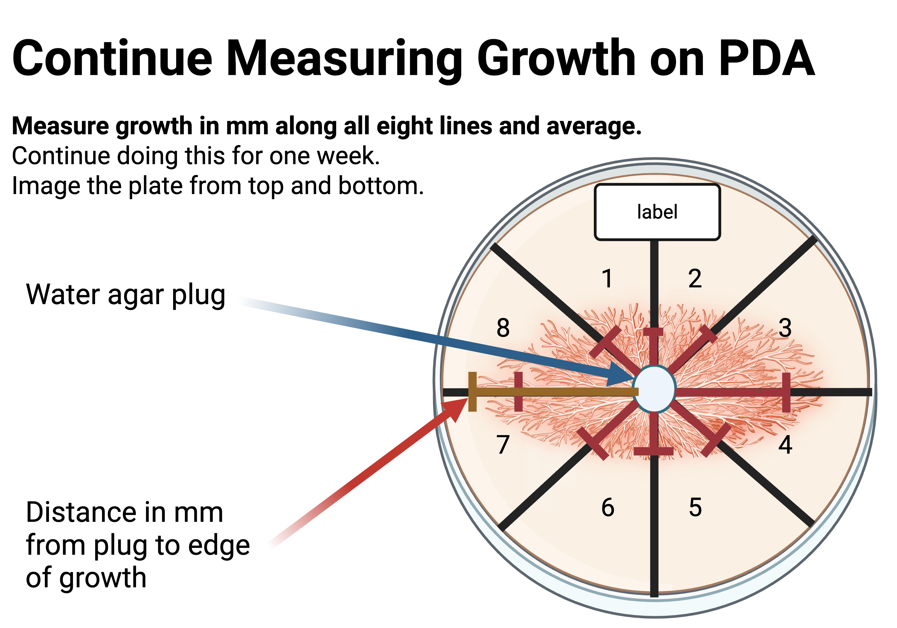
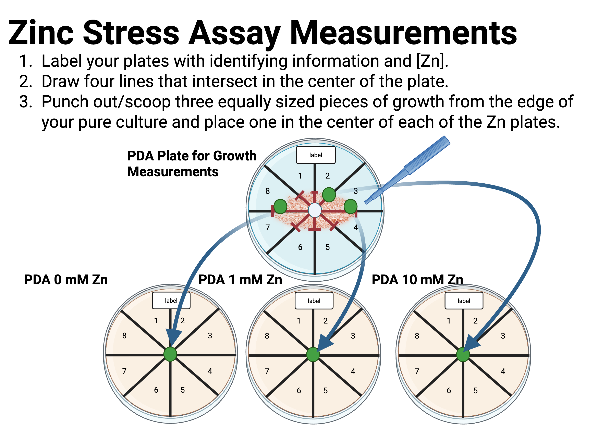
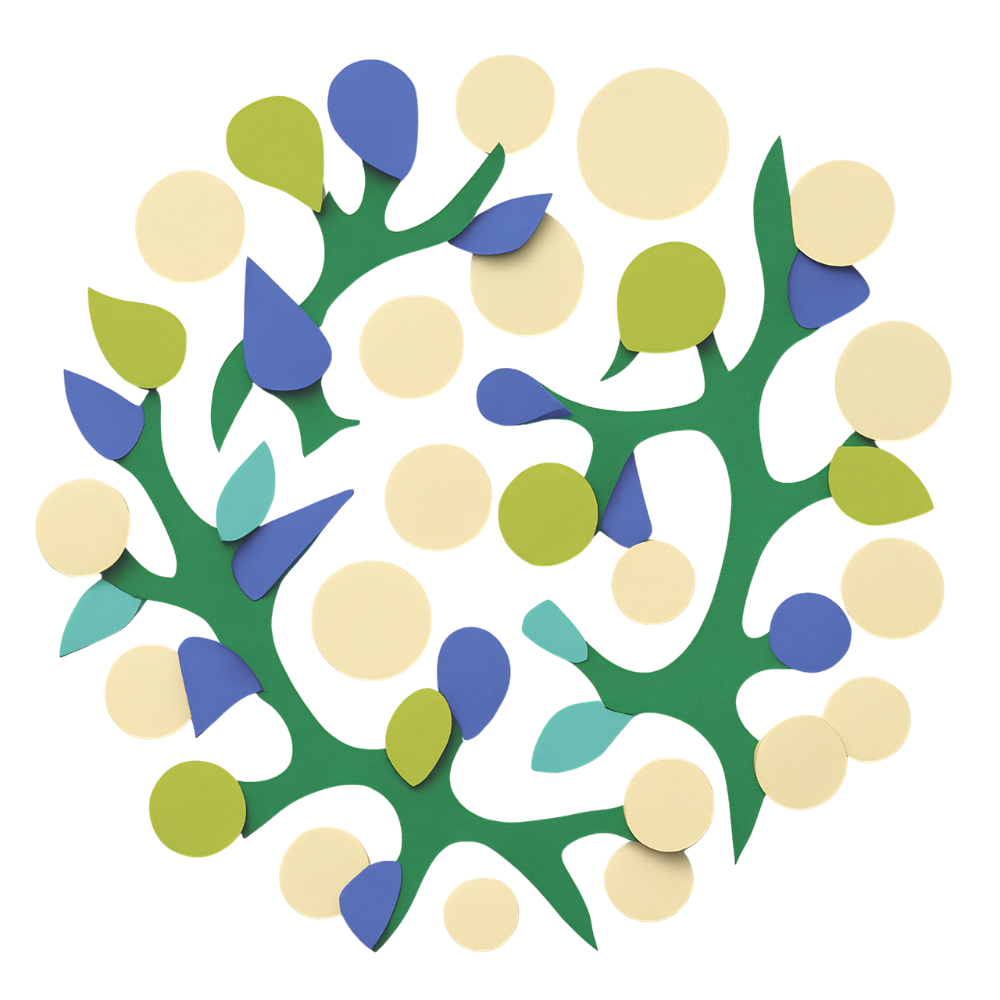

BSC 495 — The Hidden World’s Code
📽️ Open Slides
Lab Prep and Sterility We will be working at the bench and without Bunsen burners. Be very careful and do not leave plates open for long periods. First, clean your work area with bleach, and/or ethanol. We will use clean benches and laminar flow hoods when available, but this is a good alternative for those without access to these resources.
Warning
We are working with unknown fungi, which are generally not harmful to humans, but can cause allergic reactions in some individuals. Always practice good sterile technique and handle all materials with care. If you have any concerns about allergies or sensitivities, please consult with your instructor before beginning the lab. Work carefully and do not leave plates open for long periods of time, and seal them properly.
Potato Dextrose Agar (PDA) with Zn Plates for Zn Stress Assay: Suspend 39 grams Potato Dextrose Agar in 1000 ml (1 L) distilled water (or follow the directions on the bottle label). Add the appropriate amount of Zn sulfate to obtain concentrations of 1 mM Zn and 10 mM Zn in the media bottle. Heat to boiling to dissolve the medium completely (in most cases, this step can be skipped as autoclaving will dissolve media). Sterilize by autoclaving at 15 lbs pressure (121°C) for 15 minutes.
(PDA) Plates for Temperature Assay: Suspend 39 grams Potato Dextrose Agar in 1000 ml (1 L) distilled water (or follow the directions on bottle label). Heat to boiling to dissolve the medium completely (in most cases, this step can be skipped as autoclaving will dissolve media). Sterilize by autoclaving at 15 lbs pressure (121°C) for 15 minutes.
When the media is cool enough to handle with autoclave gloves, pour 60x15 mm plates in a sterile environment. Do not let it cool too long before pouring as the media will solidify. Each 60x15 mm plate holds approximately 8 mL of media. If plates will be used immediately smaller amounts of media can be poured into plates. If plates will be stored, use larger amounts. Store plates in original Petri dish sleeve in refrigerator (~4 °C) until use.
Working in your sterile environment, place one cellophane disc onto cooled PDA agar in 60x15mm plates. Use sterile forceps to transfer each cellophane disc onto the PDA plate. If you can’t easily remove single discs, try the “slide” technique. Dip your forceps into the container with the discs until you touch a disc. Using the forceps as a probe (not pinched) slide the disc to the side of the container and up the side of the container. Often, you’ll pull out one disc. Sometimes more than one disc will slide up, but it’s usually easy to see the individual discs at this point. You can then use your forceps to pull out one disc. If you grasp one disc with your forceps, you can swirl it in the water in the container to dislodge any other discs that might be attached. Open the lid of the Petri dish and lay the cellophane onto the solid agar.
This lab will introduce you to sterile technique, culturing fungi, isolating cultures, and documenting fungal growth. We will be investigating how fungal isolates react to environmental stressors, including zinc (Zn) and temperature. We will also be characterizing the morphology of fungal cultures and creating data spreadsheets to record growth rates. Finally, we will be isolating fungi for molecular extraction and analysis in the next module.
Procedures

In this lab, we will be investigating the tolerance and growth response of foliar fungal endophytes to varying concentrations of zinc (Zn). Zinc is an essential trace element for many biological processes, but in elevated concentrations, it can become toxic to fungi and other microorganisms. To understand how these fungi cope with different levels of Zn, we will isolate fungal endophytes from plant leaves and subject them to media containing 0 mM, 1 mM, and 10 mM of Zn. By measuring their growth rates over several weeks, we aim to determine the impact of Zn on their growth and survival.
Testing foliar fungal endophytes for Zn tolerance is particularly relevant as these fungi play crucial roles in plant health and ecosystem functioning. Endophytes can enhance plant growth, provide resistance to pathogens, and contribute to nutrient cycling. Understanding their tolerance to heavy metals like Zn is important for ecological studies, especially in areas affected by pollution or where plants are used in phytoremediation efforts. By assessing their ability to thrive in environments with varying Zn concentrations, we can gain insights into their resilience and potential applications in sustainable agriculture and environmental management.
Procedure:

In this lab session, we will perform microscopic examinations of the fungal cultures to analyze their morphology and cellular characteristics.
We will prepare slides of our fungal isolates and use a compound microscope to observe their structures. This will allow us to identify key features such as hyphal structure, spore formation, and other morphological traits that can help in the identification and characterization of the fungi. By comparing these microscopic observations with known fungal characteristics, we can gain insights into the diversity and taxonomy of our isolates.
Procedure: Adapted from Hardy Diagnostics Fungal Stain Protocol: BlueMount™, Permanent Fungal Stain, Lactophenol Cotton Blue with PVA, Hardy Diagnostics BlueMount Permanent Fungal Stain. 1. Place one drop of BlueMount™ in the center of a clean slide. 2. Remove a fragment of the fungus colony 2-3 mm from the colony edge using an innoculating loop or p1000 tip. 3. Place the fragment in the drop of stain and tease gently 4. Place the fragment in the drop of stain and tease gently. 5. Apply a coverslip.
Warning
Do not push down or tap the cover slip as this may dislodge the conidia from the conidiophores.
In this lab, we will explore the effects of temperature on the growth and survival of foliar fungal endophytes. Temperature is a critical environmental factor that influences fungal physiology and ecological dynamics. To investigate how these fungi respond to different thermal conditions, we will isolate fungal endophytes from plant leaves and cultivate them at three distinct temperatures: 4°C, room temperature (approximately 20°C), and 28°C. By measuring their growth rates over several weeks, we will better understand their tolerance to different temperatures.
Objectives: 1. Determine optimal growth temperature. 2. Measure how different temperatures influence fungal growth rates.
Materials: - [ ] Pure cultures (2 per student) - [ ] PDA with antibiotics (6 per student) - [ ] Fine tip Sharpie or marker - [ ] Culture cutting tool - [ ] Ethanol jar
Procedure: 1. Label your plates with identifying information and growth temperatures (two per temperature) 2. On the bottom of each plate, draw four lines that intersect in the center of the plate. 3. Cut out three 0.5 cm chunks from the edge of your pure culture and place one in the center of each of the temperature plates 4. Close and parafilm your plates 5. Carefully, flip the plates over and trace the cube using a fine-tip marker 6. Bring your plates to the front of the class and place them (unflipped) in the correct box for incubation
Objectives: 1. Measure growth for Zn stress assay 2. Measure growth for temperature assay
Materials: - [ ] Fine tip Sharpie - [ ] Three Zn culture plates - [ ] Three temperature culture plates - [ ] Ruler to measure growth in mm (mm ruler)
Procedure: 1. On the bottom of the plate, trace the edge of your fungal culture 2. Measure, in mm, new growth at each of the four edges along the lines 3. Average the eight measurements to get the average growth and determine the average growth rate (distance/time)

BSC 495 | Module 3: Phenotypic Assays | CC BY Carlos C. Goller